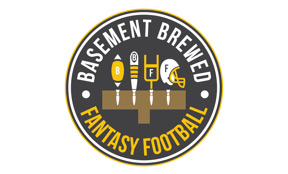

Check out our founder, Nick Johnson, as a featured guest on the CNY Conversations Podcast, hosted by Jason Klink.

Ataviz Consulting helps Basement Brewed Fantasy Football Score Big with Interactive Dashboards
Basement Brewed Fantasy Football is an online platform that offers valuable resources and tools to help fantasy football players win their leagues. To provide a more interactive and user-friendly experience for their customers, Ataviz Consulting was hired to create two interactive dashboards using Tableau, a powerful data visualization software. These dashboards enabled users to easily access and analyze critical data points related to player rankings, team rankings, team spreads, touchdown regression candidates, and more, resulting in increased customer engagement and revenue for Basement Brewed Fantasy Football.
Goal:
Basement Brewed Fantasy Football wanted to create a more interactive and user-friendly experience for their customers. They wanted to provide valuable insights and tools that would help fantasy football players make more informed decisions during the season. Ataviz Consulting's goal was to create a set of dashboards that would enable users to easily access and analyze critical data points.
Tools:
Ataviz Consulting created two interactive dashboards for Basement Brewed Fantasy Football using Tableau, a powerful data visualization software. The first dashboard was the main Heat Map, which consisted of weekly player rankings, team rankings, team spreads, team over/unders, touchdown regression candidates, and weekly streamer candidates. The second dashboard was the off-season Draft Rankings dashboard, which was designed to provide users with valuable information about player rankings, team rankings, and other key metrics related to the draft process. Both dashboards were designed to be filterable by player tier, team, position, and player name, making it easy for users to find the information they needed quickly.
Results:
The interactive dashboards created by Ataviz Consulting had a significant impact on Basement Brewed Fantasy Football's revenue. The dashboards helped to increase customer engagement and retention by providing users with valuable insights and tools that they could use to make more informed decisions during the season. By driving more customers to the platform, the dashboards helped to increase revenue for Basement Brewed Fantasy Football, establishing the platform as a leading resource for fantasy football players.

Client Testimonial:
""
-- Mikey Henniger, CEO of Basement Brewed Fantasy Football